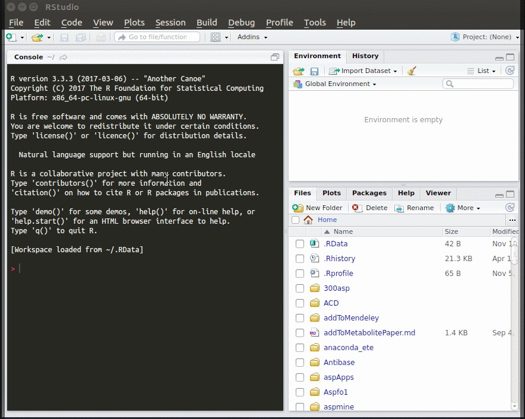
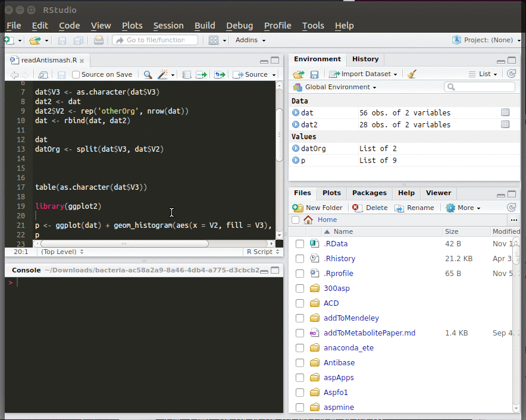
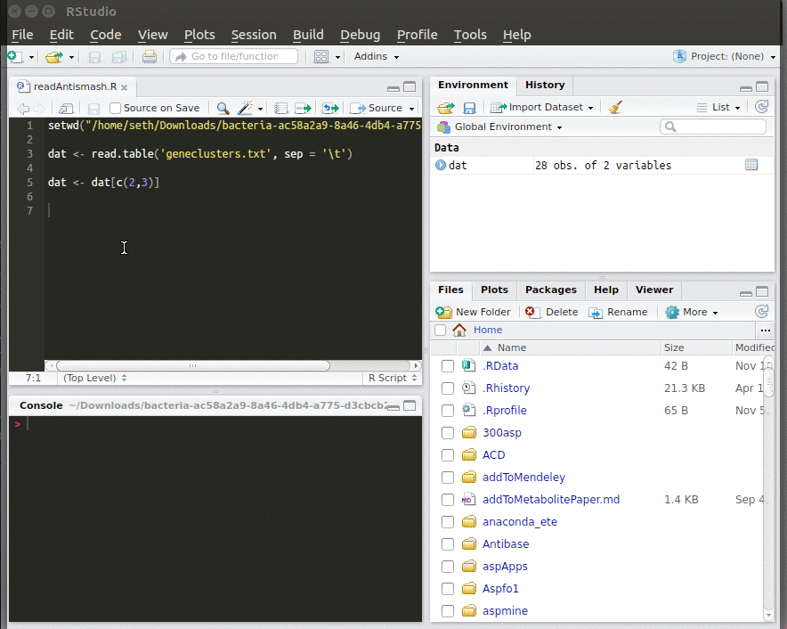

Installing Rstudio
Install Rstudio from the following site choose your system and follow the instructions.
Working in Rstudio
Rstudio is an integrated development environment (IDE), meaning it provides you with an interface to write your script, execute it, inspect your workspace (data loaded in memory) and manage packages.
When typing into the script, Rstudio will suggest you functions that match the word you are typing. To autocomplete, select the right function with the arrow keys and press the tab or enter key. Once you are finished with a line of code, you can execute it by ctrl + enter (cmd + enter for Mac, or the button clicked in the video). Select blocks of code with the mouse and hit ctrl + enter to execute a whole code block.

Installing packages
Packages are collections of functions that help you in your work. The R community has developed a vast amount of helpful packages which can be downloaded from inside Rstudio. To install a package, select the Packages tab, click Install and type in the package you need.
Before using functions of a package you have to load it. Either select the package under the Packages tab or write library(packageName) in your script and execute the line.

Before starting the course you should have the following packages installed:
- ggplot2
- reshape2
- ape
- RColorBrewer
- gplots
How to get help
The documentation on R functions are a good starting point. You can either access the Help tab on the bottom right window or type ?function in your script and execute it.
